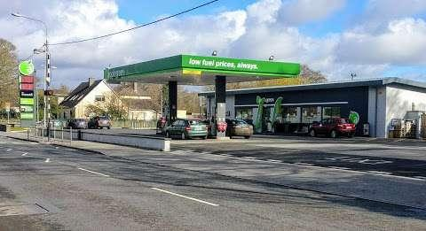
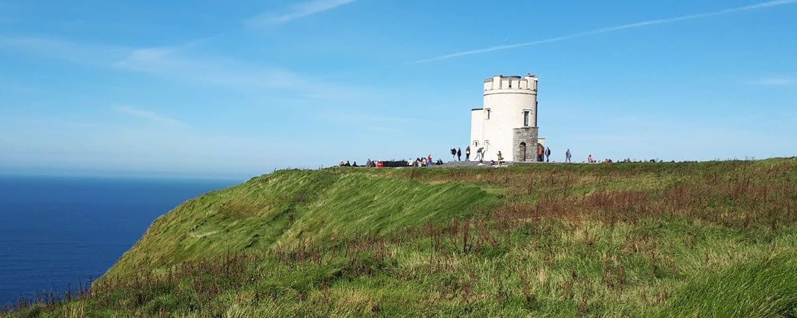

Друзі, пропонуємо вам подорож до скель Мохер на березі Атлантичного океану. Це найпопулярніше місце Ірландії як серед туристів, так і серед її мешканців.
Ми самостійно орендували автобус, наша подорож без екскурсовода.
Наш маршрут

Виїзджаємо 03.06 в суботу в 08.00 з АЗС Applegreen R42NY54.
Важливо прийти вчасно, щоб все встигнути без поспіху.
В дорозі до Корку (Cork) ми проведемо приблизно 2-2,5 години
На скелях ми самостійно будемо гуляти 4 години.
Близько к 18.00 плануємо бути в Birr.
Скелі Мохер
що подивитись:
Відвідайте Башню О'Брайена, в неї відкривається гарний краєвид.

Можете прогулятися до Pollboy Lookout.
І прогулятися до Moher Tower at Hag's Head.
Відвідати Visitor centre - дізнатися про скелі Мохер.